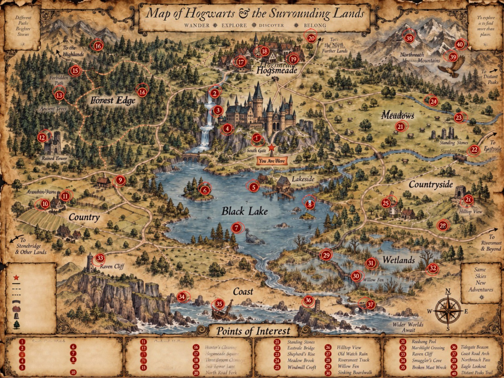

THE LOST YEARS · Free Roam
−
＋
40 POIs
Export save
Import save

✕
Visible from afar
Status
??? · Undiscovered
Known location
Discovered
Restricted
Cleared
Resolved
Log · What Matthael knows
What is there · Confirmed only
Reward · Found / Obtained
Quest / route / consequence notes
Save POI
Copy log
Close
Editing a card changes only this map’s local save, not the GitHub campaign state.